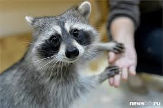

Зоопарк "Четыре лапы"- самый большой и разнообразный зоопарк в Городе, где обитает огромное количество удивительных и милых животных. Мы приглашаем вас посетить уникальное место, где царит особая трогательная атмосфера, и происходят настоящие чудеса.
Подарите радость себе и своему ребенку
Ручной зоопарк – это отличная возможность прекрасно провести время со своим ребенком, подарить ему яркие эмоции и незабываемые впечатления, которые останутся в его памяти на долгое время. Общение с животными очень полезно для душевного и познавательного развития детей. Оно приучает бережно относиться к природе и заботиться о братьях наших меньших. В детских сердцах во время посещения тактильного зоопарка зарождается доброе и ответственное отношение ко всему живому. В нашем трогательном зоопарке вы познакомитесь с самыми разнообразными животными. У нас есть большие зоны с кроликами, козами и курочками. Вы сможете спокойно ходить по этим вольерам со своим ребенком, а также гладить и кормить их обитателей. Ваши дети испытают настоящее счастье и бурный восторг от того, что смогут своими руками потрогать животных, которые являются любимыми героями их сказок. В нашем тактильном зоопарке есть также вольеры с экзотическими животными. Мы создали для них все условия для счастливой жизни. Они прекрасно себя чувствуют и охотно общаются с посетителями из своего вольера. Все животные имеют необходимые справки, привиты и абсолютно здоровы. Наши специалисты всегда находятся в зале и следят за безопасностью.
Лучший и самый большой зоопарк в Городе
Если вы решили посетить зоопарк, то лучшего места в Городе, чем у нас, вы не найдете. Вы и ваш ребенок получите огромный заряд бодрости, отличное настроение и новые эмоции. Наши зоопарки «Четыре лапы» расположены в двух торгово-развлекательных комплексах. Зоопарки «Четыре лапы» находятся в крупных торговых центрах г. Город: в ТРЦ "Остров Мечты" на 3м этаже, в ТЦ "Лучший ТЦ" на 3м этаже.
Сотрудники зоопарка проводят экскурсии и рассказывают о каждом питомце
Всех обитателей нашего контактного зоопарка можно кормить, гладить и даже брать на руки и играть. Жителями зоопарков являются еноты, морские свинки, карликовые кролики, белки, ушастые ежики, волнистые попугайчики и другие животные.